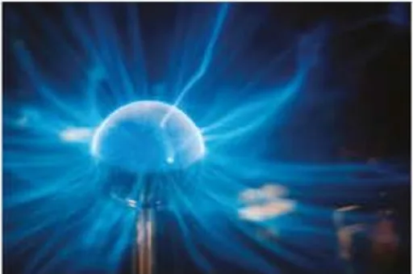
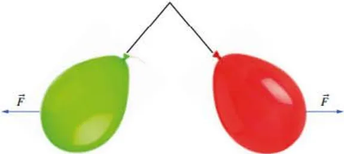
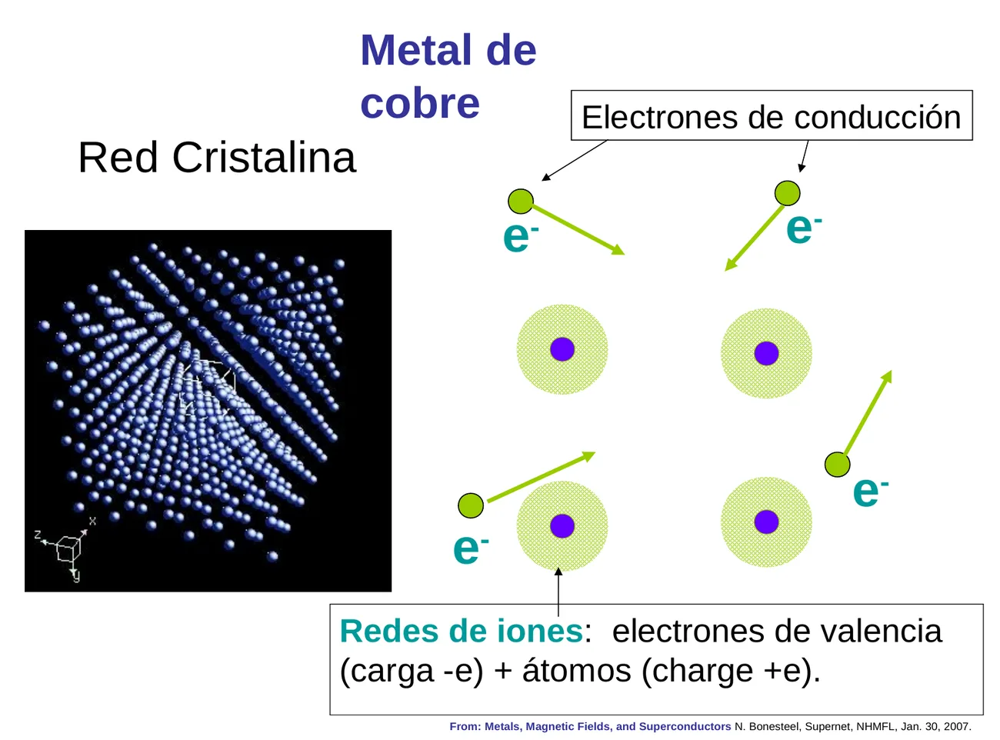
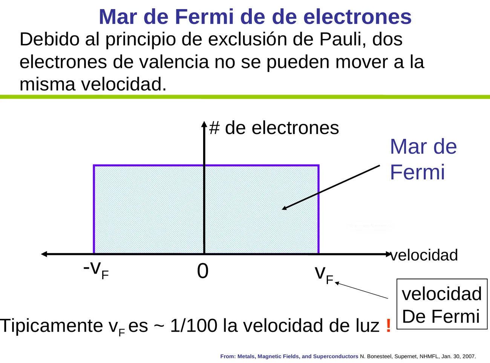
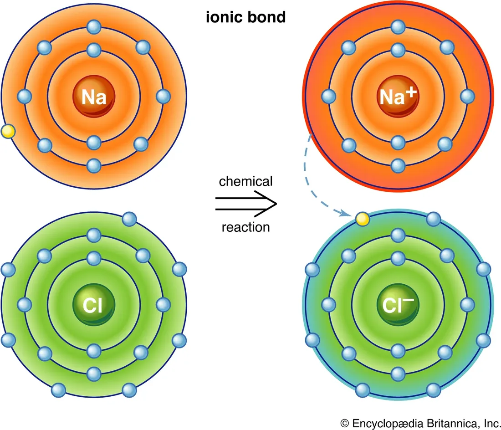
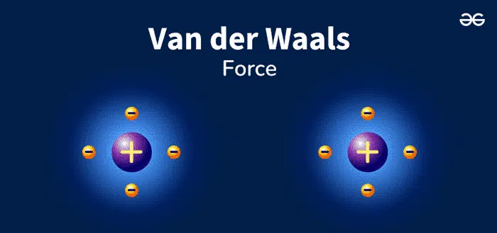

Diseño de material de estudio · W. Alexander Flórez
Fundamentación en Física · Capítulo 4
De la ley de Coulomb a las ondas de Maxwell, y de ahí al átomo que no debería existir: el colapso clásico que obligó a inventar el modelo de Bohr.
→ diapositiva siguiente · ↑↓ pasos dentro de la diapositiva · espacio todo en orden · F pantalla completa
§ 4.0 · Motivación


Dos electrones no pueden ocupar el mismo estado cuántico: como mucho caben dos en cada nivel de energía, uno con espín ↑ y otro con espín ↓. Por eso las nubes de electrones de dos átomos no pueden encimarse, y la materia ocupa espacio. Se estudia en § 4.9.
§ 4.0 · Motivación · Metales

Es como un átomo gigante: el «núcleo» es la red de \(\sim 10^{23}\) iones y los electrones de valencia ya no pertenecen a ningún átomo, sino a todo el metal. Esa nube negativa que pega a los iones positivos es el enlace metálico.
§ 4.0 · Motivación · Metales
Cable de cobre de \(\qty{1}{mm^{2}}\). La deriva está muy exagerada: en el cable real es unas \(10^{10}\) veces menor que la rapidez de los electrones. La flecha marca su desplazamiento promedio.

Los electrones llenan los niveles hasta \(E_F \approx \qty{7}{eV}\) en el cobre: \[ v_F = \sqrt{\dfrac{2E_F}{m_e}} \approx \qty{1{,}6\times 10^{6}}{m/s} \approx \dfrac{c}{190} \,. \]
Con \(n = \qty{8{,}5\times 10^{28}}{m^{-3}}\) electrones libres, una corriente de \(\qty{1}{A}\) solo necesita una deriva \(v_d = I/(n e A) \approx \qty{0{,}07}{mm/s}\). La luz se prende al instante porque lo que viaja casi a la velocidad de la luz es el campo, no los electrones.
§ 4.0 · Motivación · Enlaces
En la molécula H₂ hay cuatro cargas: dos protones que se repelen y dos electrones que también se repelen. ¿De dónde sale la atracción?
Si los electrones están entre los núcleos, cada protón es atraído hacia el centro, y la suma de esas atracciones le gana a la repulsión entre los protones. Los dos núcleos «se pelean» por los mismos electrones, y eso los acerca.
Fuera de la zona sombreada, el par de electrones jala más al núcleo cercano que al lejano y la molécula se rompe. Con el principio de Pauli, solo dos electrones con espines opuestos caben en esa región: de ahí el «par» del enlace.
Dos electrones no pueden ocupar el mismo estado cuántico. En el mismo orbital de enlace caben como máximo dos, con espines opuestos (↑↓). Un tercer electrón tendría que ir a un orbital de más energía, y en el He₂ eso impide el enlace.
§ 4.0 · Motivación · Enlaces

Con \(k e^{2} = \qty{1{,}44}{eV\cdot nm}\) y \(r = \qty{0{,}236}{nm}\) entre el Na⁺ y el Cl⁻: \[ U_e = -\dfrac{\qty{1{,}44}{eV\cdot nm}}{\qty{0{,}236}{nm}} \approx -\qty{6{,}1}{eV} \,. \] Un pozo profundo: separar los iones cuesta, según la medición, unos \(\qty{5{,}8}{eV}\). El modelo de dos cargas puntuales casi lo explica todo.

En cada instante los electrones pueden estar más hacia un lado: aparece un dipolo instantáneo, que polariza al átomo vecino. Es el efecto de la varilla y el papelito, a escala atómica: \(\abs{\vect{F}} \propto 1/r^{7}\).
Así se condensan los gases nobles, el gecko trepa por un vidrio y se pliegan las proteínas. El agua, con dipolos permanentes, forma los puentes de hidrógeno.
§ 4.1 · Electricidad
\(k = \qty{8{,}987\,551\,786\times 10^{9}}{N\,m^2/C^2}\). La cuadrícula está en centímetros. Las fuerzas sobre \(q_1\) y \(q_2\) son iguales y opuestas: ley de acción y reacción.
§ 4.1 · Energía potencial
\(U_e > 0\): repulsión, hay que hacer trabajo para juntarlas. \(U_e \lt 0\): atracción, sistema ligado en un pozo de potencial. Los signos de las cargas sí cuentan.
Un electrón que atraviesa \(\qty{1}{V}\): \(U_e = eV = \qty{1{,}602\,176\,634\times 10^{-19}}{J} \equiv \qty{1}{eV}\).
§ 4.1 · Aplicaciones
El paño de algodón pierde electrones (queda \(+\)); el globo de látex los gana (queda \(-\)). Dos globos frotados se repelen.
Dos protones a \(\qty{2\times 10^{-15}}{m}\) tienen \(U_e \approx \qty{0{,}72}{MeV}\). En núcleos grandes es la repulsión eléctrica la que impulsa la fisión y da energía a los fragmentos.
Dipolos instantáneos inducen dipolos vecinos: \(\abs{\vect{F}} \propto 1/r^{7}\). Condensan los gases nobles y sostienen al gecko en una pared de vidrio.
§ 4.2 · Corriente eléctrica
Ejemplo. Por un cable con \(\qty{0{,}5}{A}\) pasan \(0{,}5/(\qty{1{,}6\times 10^{-19}}{C}) \approx 3{,}1\times 10^{18}\) electrones cada segundo.
Nevera: \(\qty{34{,}7}{kWh}\) al mes \(\div\, \qty{720}{h} \approx \qty{48}{W}\); a \(\qty{110}{V}\), \(I \approx \qty{0{,}44}{A}\).
Mes de 30 días \(= \qty{720}{h}\); red de \(\qty{110}{V}\).
§ 4.3 · Ley de Ampère
En un lazo cerrado de longitud \(L\) con \(\vect{B}\) constante y paralelo a él:
\(\mu_0 = \qty{1{,}257\times 10^{-6}}{T\cdot m/A}\). Campo terrestre de referencia: \(\approx \qty{50}{\mu T}\).
§ 4.3 · Solenoide
Ampère con producto escalar: \(\sum B\,L\cos\theta = \mu_0 I_{\text{enc}}\).
Lado 1 (dentro, paralelo a \(\vect{B}\)): \(B L\cos 0^\circ = BL\).
Lados 2 y 4 (perpendiculares): \(\cos 90^\circ = 0\).
Lado 3 (fuera, \(B \approx 0\)): nada.
Depende de las vueltas por unidad de longitud: 100 vueltas en \(\qty{1}{m}\) y 50 en \(\qty{0{,}5}{m}\) dan el mismo \(B\) con la misma corriente.
§ 4.3 · Fuerza magnética
Sobre una carga en movimiento, \(\vect{F} = q\,\vect{v}\times\vect{B}\), \(F = qvB\sin\theta\). Para un tramo de alambre, \(F = I L B\); con el campo del otro alambre:
§ 4.4 · Ley de inducción de Faraday
El flujo magnético cambia mientras el imán se mueve: aparece una corriente cuyo campo se opone al cambio. Quieto, no hay corriente. El mismo efecto ocurre si se mueve la bobina.
Al soltar el acelerador, las ruedas hacen girar el motor: la inducción recarga la batería y la oposición al giro frena el carro.
La corriente alterna de una bobina crea un campo variable que induce corrientes en la olla metálica; su resistencia las convierte en calor.
§ 4.5 · Ecuaciones de Maxwell
El problema. Al cargar un condensador hay corriente \(I\) en el cable y, por Ampère, campo magnético a su alrededor. Entre las placas no cruza ninguna carga… pero se mide el mismo campo magnético.
Un flujo eléctrico que cambia actúa como una corriente.
El magnetismo tiene dos fuentes: cargas en movimiento y campos eléctricos variables. Un \(\vect{E}\) cambiante crea \(\vect{B}\) y un \(\vect{B}\) cambiante crea \(\vect{E}\): la perturbación se sostiene a sí misma y viaja a la velocidad de la luz como onda electromagnética.
§ 4.6 · Ondas electromagnéticas
Por eso las antenas de FM miden metros y las de un teléfono, centímetros.
§ 4.7 · El límite de la física newtoniana
Larmor. Por análisis dimensional con \(k e^{2}\), \(a\) y \(c\), la potencia radiada es \[ P = \dfrac23\,\dfrac{k e^{2} a^{2}}{c^{3}}. \]
Energía disponible. Con \(m v^{2}/r = k e^{2}/r^{2}\): \[ E = \tfrac12 m v^{2} - \dfrac{k e^{2}}{r} = -\dfrac{k e^{2}}{2r}, \qquad a = \dfrac{k e^{2}}{m r^{2}}. \]
§ 4.7 · Radiación de sincrotrón
\(\Delta E\) y \(E\) en \(\mathrm{GeV}\), \(R\) en metros.
§ 4.8 · Espectros atómicos
Predicción clásica. Un átomo es una antena: al caer en espiral, su frecuencia orbital aumenta y debería emitir un espectro continuo, del rojo al ultravioleta.
Realidad. El hidrógeno solo emite cuatro líneas visibles (serie de Balmer): \(\qty{656}{nm}\), \(\qty{486}{nm}\), \(\qty{434}{nm}\) y \(\qty{410}{nm}\). Es la huella digital del átomo.
Cada elemento tiene su patrón de líneas; en 1868 unas líneas solares desconocidas revelaron el helio.
Encuentra por ensayo y error \(E_n = -\qty{13{,}6}{eV}/n^{2}\), sin saber por qué funciona.
Con núcleo y electrones orbitando, Newton y Maxwell predicen el colapso. Bohr impone la cuantización y explica el factor \(1/n^{2}\).
§ 4.9 · Modelo de Bohr
Los electrones solo existen en esos niveles; la luz se emite al saltar de un nivel a otro inferior, con \(E_{\text{fotón}} = \abs{\Delta E}\).
§ 4.9 · Laboratorio
\(hc \approx \qty{1239{,}84}{eV\cdot nm}\). \(n_f = 1\): serie de Lyman (ultravioleta); \(n_f = 2\): Balmer (visible); \(n_f = 3\): Paschen (infrarrojo).
§ 4.9 · Profundización
Principio de exclusión: dos electrones de un átomo no pueden ocupar el mismo estado cuántico. Basta con que difiera un número del «código postal»:
Con \(2s\) y los tres \(2p\) llenos, el átomo es esféricamente simétrico y de mínima energía: un gas noble inerte.
Reto Aciertos: 0 / 4
Práctica Aciertos: 0 / 4
Ejercicios propuestos · ↓ revela cada respuesta
Glosario